용접기능사 (2015-10-10 기출문제)
1과목: 용접일반
1. 초음파 탐상법의 종류에 속하지 않는 것은?
- 투과법
- 펄스반사법
- 공진법
- 극간법
(정답률: 79%)

2. 용접작업 중 지켜야 할 안전사항으로 틀린 것은?
- 보호 장구를 반드시 착용하고 작업 한다.
- 훼손된 케이블은 사용 후에 보수한다.
- 도장된 탱크 안에서의 용접은 충분히 환기시킨 후에 작업한다.
- 전격 방지기가 설치된 용접기를 사용한다.
(정답률: 93%)
3. 자동화 용접장치의 구성요소가 아닌 것은?
- 고주파 발생장치
- 칼럼
- 트랙
- 갠트리
(정답률: 63%)
4. CO2 가스 아크 용접에서 기공의 발생 원인으로 틀린 것은?
- 노즐에 스패터가 부착되어 있다.
- 노즐과 모재사이의 거리가 짧다.
- 모재가 오염(기름, 녹, 페인트)되어 있다.
- CO2 가스의 유량이 부족하다.
(정답률: 58%)
5. 서브머지드 아크 용접의 특징으로 틀린 것은?
- 콘택트 팁에서 통전되므로 와이어 중에 저항열이 적게 발생되어 고전류 사용이 가능하다.
- 아크가 보이지 않으므로 용접부의 적부를 확인하기가 곤란하다.
- 용접 길이가 짧을 때 능률적이며 수평 및 위보기 자세 용접에 주로 이용된다.
- 일반적으로 비드 외관이 아름답다.
(정답률: 67%)
6. 주철 용접 시 주의사항으로 옳은 것은?
- 용접 전류는 약간 높게 하고 운봉하여, 곡선비드 배치하며 용입을 깊게 한다.
- 가스 용접 시 중성불꽃 또는 산화불꽃을 사용하고 용제는 사용하지 않는다.
- 냉각되어 있을 때 피닝작업을 하여 변형을 줄이는 것이 좋다.
- 용접봉의 지름은 가는 것을 사용하고, 비드의 배치는 짧게 하는 것이 좋다.
(정답률: 52%)
7. 다음 중 CO2 가스 아크 용접의 장점으로 틀린 것은?
- 용착 금속의 기계적 성질이 우수하다.
- 슬래그 혼입이 없고, 용접 후 처리가 간단하다.
- 전류밀도가 높아 용입이 깊고, 용접 속도가 빠르다.
- 풍속 2m/s 이상의 바람에도 영향을 받지 않는다.
(정답률: 81%)
8. 용접 흠 이음 형태 중 U형은 루트 반지름을 가능한 크게 만드는데 그 이유로 가장 알맞은 것은?
- 큰 개선각도
- 많은 용착량
- 충분한 용입
- 큰 변형량
(정답률: 71%)
9. 비용극식, 비소모식 아크 용접에 속하는 것은?
- 피복아크 용접
- TIG 용접
- 서브머지드 아크 용접
- CO2 용접
(정답률: 70%)
10. TIG 용접에서 직류 역극성에 대한 설명이 아닌 것은?
- 용접기의 음극에 모재를 연결한다.
- 용접기의 양극에 토치를 연결한다.
- 비드 폭이 좁고 용입이 깊다.
- 산화 피막을 제거하는 청정작용이 있다.
(정답률: 63%)
11. 다음 중 용접 작업 전에 예열을 하는 목적으로 틀린 것은?
- 용접 작업성의 향상을 위하여
- 용접부의 수축 변형 및 잔류 응력을 경감시키기 위하여
- 용접금속 및 열 영향부의연성 또는 인성을 향상시키기 위하여
- 고탄소강이나 합금강의 열 영향부 경도를 높게 하기 위하여
(정답률: 57%)
12. 전기저항용접 중 플래시 용접 과정의 3 단계를 순서대로 바르게 나타낸 것은?
- 업셋→플래시→예열
- 예열→업셋→플래시
- 예열→플래시→업셋
- 플래시→업셋→예열
(정답률: 69%)
13. 다음 중 다층용접 시 적용하는 용착법이 아닌 것은?
- 빌드업법
- 캐스케이드법
- 스킵법
- 전진블록법
(정답률: 74%)
14. 피복아크 용접 시 지켜야 할 유의사항으로 적합하지 않은 것은?
- 작업 시 전류는 적정하게 조절하고 정리 정돈을 잘하도록 한다.
- 작업을 시작하기 전에는 메인스위치를 작동시킨 후에 용접기 스위치를 작동시킨다.
- 작업이 끝나면 항상 메인스위치를 먼저 끈 후에 용접기 스위치를 꺼야 한다.
- 아크 발생 시 항상 안전에 신경을 쓰도록 한다.
(정답률: 85%)
15. 전격의 방지대책으로 적합하지 않는 것은?
- 용접기의 내부는 수시로 열어서 점검하거나 청소한다.
- 홀더나 용접봉은 절대로 맨손으로 취급하지 않는다.
- 절연 홀더의 절연부분이 파손되면 즉시 보수하거나 교체한다.
- 땀, 물 등에 의해 습기찬 작업복, 장갑, 구두 등은 착용하지 않는다.
(정답률: 82%)
16. 연납과 경납을 구분하는 온도는?
- 550℃
- 450℃
- 350℃
- 250℃
(정답률: 73%)
17. 용접 진행 방향과 용착 방향이 서로 반대가 되는 방법으로 잔류 응력은 다소 적게 발생하나 작업의 능률이 떨어지는 용착법은?
- 전진법
- 후진법
- 대칭법
- 스킵법
(정답률: 60%)
18. 다음 중 테르밋 용접의 특징에 관한 설명으로 틀린 것은?
- 용접 작업이 단순하다.
- 용접기구가 간단하고, 작업장소의 이동이 쉽다.
- 용접 시간이 길고, 용접 후 변형이 크다.
- 전기가 필요 없다.
(정답률: 76%)
19. 다음 중 용접 후 잔류응력완화법 에 해 당하지 않는 것은?
- 기계적응력완화법
- 저온응력완화법
- 피닝법
- 화염경화법
(정답률: 66%)
20. 용접 지그나 고정구의 선택 기준 설명 중 틀린 것은?
- 용접하고자 하는 물체의 크기를 튼튼하게 고정시킬 수 있는 크기와 강성이 있어야 한다.
- 용접 응력을 최소화할 수 있도록 변형이 자유스럽게 일어날 수 있는 구조이어야 한다.
- 피용접물의 고정과 분해가 쉬워야 한다.
- 용접간극을 적당히 받쳐주는 구조이어야 한다.
(정답률: 77%)
21. 다음 중 용접자세 기호로 틀린 것은?
- F
- V
- H
- OS
(정답률: 86%)
22. 전기저항용접의 발열량을 구하는 공식으로 옳은 것은? (단, H : 발열량(cal), I : 전류(A), R：저 항(Ω), t : 시간(see)이다.)
- H = 0.24 IRt
- H = 0.24 IR2t
- H = 0.24 I2Rt
- H = 0.24 IRt2
(정답률: 61%)
23. 가스용접 모재의 두께가 3.2㎜일 때 가장 적당한 용접봉의 지름을 계산식으로 구하면 몇 ㎜인가?
- 1.6
- 2.0
- 2.6
- 3.2
(정답률: 74%)
24. 가스 용접에 사용되는 가연성 가스의 종류가 아닌 것은?
- 프로판가스
- 수소 가스
- 아세틸렌가스
- 산소
(정답률: 73%)
25. 환원가스발생 작용을 하는 피복아크 용접봉의 피복제 성분은?
- 산화티탄
- 규산나트륨
- 탄산칼륨
- 당밀
(정답률: 41%)
26. 토치를 사용하여 용접 부분의 뒷면을 따내거나 U형, H형으로 용접 홈을 가공하는 것으로 일명 가스 파내기라고 부르는 가공법은?
- 산소창 절단
- 선삭
- 가스 가우징
- 천공
(정답률: 81%)
27. 피복 아크 용접에서 직류 역극성(DCRP) 용접의 특징으로 옳은 것은?
- 모재의 용입이 깊다.
- 비드 폭이 좁다.
- 봉의 용융이 느리다.
- 박판, 주철, 고탄소강의 용접 등에 쓰인다.
(정답률: 65%)
28. 다음 중 아세틸렌가스의 관으로 사용할 경우 폭발성 화합물을 생성하게 되는 것은?
- 순구리관
- 스테인리스강관
- 알루미늄합금관
- 탄소강관
(정답률: 51%)
29. 가스절단 시 예열 불꽃이 약할 때 일어나는 현상으로 틀린 것은?
- 드래그가 증가한다.
- 절단면이 거칠어진다.
- 역화를 일으키기 쉽다.
- 절단속도가 느려지고, 절단이 중단되기 쉽다.
(정답률: 43%)
30. 직류아크 용접기와 비교하여 교류아크 용접기에 대한 설명으로 가장 올바른 것은?
- 무부하 전압이 높고 감전의 위험이 많다.
- 구조가 복잡하고 극성변화가 가능하다.
- 자기쏠림 방지가 불가능하다.
- 아크 안정성이 우수하다.
(정답률: 52%)
31. 재료의 접합방법은 기계적 접합과 야금적 접합으로 분류하는데 야금적 접합에 속하지 않는 것은?
- 리벳
- 융접
- 압접
- 납땜
(정답률: 77%)
32. 피복아크 용접기를 사용하여 아크 발생을 8분간 하고 2분간 쉬었다면, 용접기 사용률은 몇 %인가?
- 25
- 40
- 65
- 80
(정답률: 77%)
33. 다음 중 알루미늄을 가스 용접할 때 가장 적절한 용제는?
- 붕사
- 탄산나트륨
- 염화나트륨
- 중탄산나트륨
(정답률: 45%)
34. 아크 용접에서 아크쏠림 방지 대책으로 옳은 것은?
- 용접봉 끝을 아크쏠림 방향으로 기울인다.
- 접지점을 용접부에 가까이 한다.
- 아크 길이를 길게 한다.
- 직류용접 대신 교류용접을 사용한다.
(정답률: 69%)
35. 일반적인 용접의 장점으로 옳은 것은?
- 재질 변형이 생긴다.
- 작업 공정이 단축된다.
- 잔류 응력이 발생한다.
- 품질검사가 곤란하다.
(정답률: 80%)
2과목: 용접재료
36. 용접작업을 하지 않을 때는 무부하 전압을 20~30V 이하로 유지하고 용접봉을 작업물에 접촉시키면 릴레이(relay)작동에 의해 전압이 높아져 용접작업이 가능하게 하는 장치는?
- 아크부스터
- 원격제어장치
- 전격방지기
- 용접봉 홀더
(정답률: 50%)
37. 다음 중 연강용 가스용접봉의 종류인 “GA43”에서 “43”이 의미하는 것은?
- 가스 용접봉
- 용착금속의 연신율 구분
- 용착금속의 최소 인장강도 수준
- 용착금속의 최대 인장강도 수준
(정답률: 70%)
38. 피복제 중에 산화티탄(TiO2)을 약 35% 정도 포함한 용접봉으로서 아크는 안정되고 스패터는 적으나, 고온 균열(hot crack)을 일으키기 쉬운 결점이 있는 용접봉은?
- E 4301
- E 4313
- E 4311
- E 4316
(정답률: 65%)
39. 알루미늄과 마그네슘의 합금으로 바닷물과 알칼리에 대한 내식성이 강하고 용접성이 매우 우수하여 주로 선박용 부품, 화학 장치용 부품 등에 쓰이는 것은?
- 실루민
- 하이드로날륨
- 알루미늄 청동
- 애드미럴티 황동
(정답률: 59%)
40. 다음 금속 중 용융 상태에서 응고할 때 팽창하는 것은?
- Sn
- Zn
- Mo
- Bi
(정답률: 45%)
41. 60%Cu – 40%Zn 황동으로 복수기용 판, 볼트, 너트 등에 사용되는 합금은?
- 톰백(Tombac)
- 길딩메탈(Gilding metal)
- 문쯔메탈(Muntz metal)
- 애드미럴티메탈(Admiralty metal)
(정답률: 66%)
42. 시편의 표점거리가 125mm, 늘어난 길이가 145mm 이었다면 연신율은?
- 16%
- 20%
- 26%
- 30%
(정답률: 53%)
43. 주철의 유동성을 나쁘게 하는 원소는?
- Mn
- C
- P
- S
(정답률: 45%)
44. 주변 온도가 변화하더라도 재료가 가지고 있는 열팽창계수나 탄성계수 등의 특정한 성질이 변하지 않는 강은?
- 쾌삭강
- 불변강
- 강인강
- 스테인리스강
(정답률: 72%)
45. 열과 전기의 전도율이 가장 좋은 금속은?
- Cu
- Al
- Ag
- Au
(정답률: 52%)
46. 비파괴검사가 아닌 것은?
- 자기탐상시험
- 침투탐상시험
- 샤르피충격시험
- 초음파탐상시험
(정답률: 78%)
47. 구상흑연주철에서 그 바탕조직이 펄라이트이면서 구상흑연의 주위를 유리된 페라이트가 감싸고 있는 조직의 명칭은?
- 오스테나이트(austenite) 조직
- 시멘타이트(cementite) 조직
- 레데뷰라이트(ledeburite) 조직
- 불스 아이(bull’s eye) 조직
(정답률: 45%)
48. 섬유 강화 금속 복합 재료의 기지 금속으로 가장 많이 사용되는 것으로 비중이 약 2.7인 것은?
- Na
- FE
- Al
- Co
(정답률: 71%)
49. 강에서 상온 메짐(취성)의 원인이 되는 원소는?
- P
- S
- Al
- Co
(정답률: 50%)
50. 강자성체 금속에 해당되는 것은?
- Bi, Sn, Au
- Fe, Pt, Mn
- Ni, Fe, Co
- Co, Sn, Cu
(정답률: 63%)
3과목: 기계제도
51. 그림과 같은 KS 용접기호의 해석으로 올바른 것은?
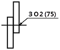
- 지름이 2㎜이고, 피치가 75㎜인 플러그 용접이다.
- 지름이 2㎜이고, 피치가 75㎜인 심 용접이다.
- 용접 수는 2개이고, 피치가 75㎜인 슬롯 용접이다.
- 용접 수는 2개이고, 피치가 75㎜인 스폿(점) 용접이다
(정답률: 50%)
52. 그림과 같은 도시기호가 나타내는 것은?
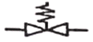
- 안전 밸브
- 전동 밸브
- 스톱 밸브
- 슬루스 밸브
(정답률: 64%)
53. 도면의 척도 값 중 실제 형상을 확대하여 그리는 것은?
- 2 : 1
- 1 : √2
- 1 : 1
- 1 :2
(정답률: 67%)
54. 그림과 같은 입체도를 3각법으로 올바르게 도시한 것은?
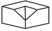
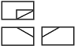
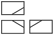
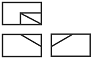
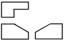
(정답률: 76%)
55. 도면에 물체를 표시하기 위한 투상에 관한 설명 중 잘못된 것은?
- 주 투상도는 대상물의 모양 및 기능을 가장 명확하게 표시하는 면을 그린다.
- 보다 명확한 설명을 위해 주 투상도를 보충하는 다른 투상도를 많이 나타낸다.
- 특별한 이유가 없을 경우 대상물을 가로길이로 놓은 상태로 그린다.
- 서로 관련되는 그림의 배치는 되도록 숨은선을 쓰지 않도록 한다.
(정답률: 46%)
56. KS 기계재료 표시기호 “SS 400”의 400은 무엇을 나타내는가?
- 경도
- 연신율
- 탄소 함유량
- 최저 인장강도
(정답률: 69%)
57. 그림과 같이 기계 도면 작성 시 가공에 사용하는 공구 등의 모양을 나타낼 필요가 있을 때 사용하는 선으로 올바른 것은?
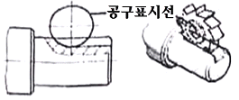
- 가는 실선
- 가는 1점 쇄선
- 가는 2점 쇄선
- 가는 파선
(정답률: 54%)
58. 기호를 기입한 위치에서 먼 면에 카운터 싱크가 있으며, 공장에서 드릴 가공 및 현장에서 끼워 맞춤을 나타내는 리벳의 기호 표시는?
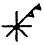
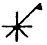
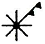
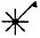
(정답률: 48%)
59. 그림과 같은 입체도의 화살표 방향 투시도로 가장 적합한 것은?
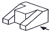
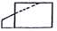
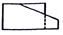
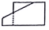
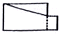
(정답률: 73%)
60. 치수기입의 원칙에 관한 설명 중 틀린 것은?
- 치수는 필요에 따라 기준으로 하는 점, 선 또는 면을 기준으로 하여 기입한다.
- 대상물의 기능, 제작, 조립 등을 고려하여 필요하다고 생각되는 치수를 명료하게 도면에 지시한다.
- 치수 입력에 대해서는 중복 기입을 피한다.
- 모든 치수에는 단위를 기입해야 한다.
(정답률: 71%)